Workshop
From prototyping to shipping like an engineer
Chris Parsons
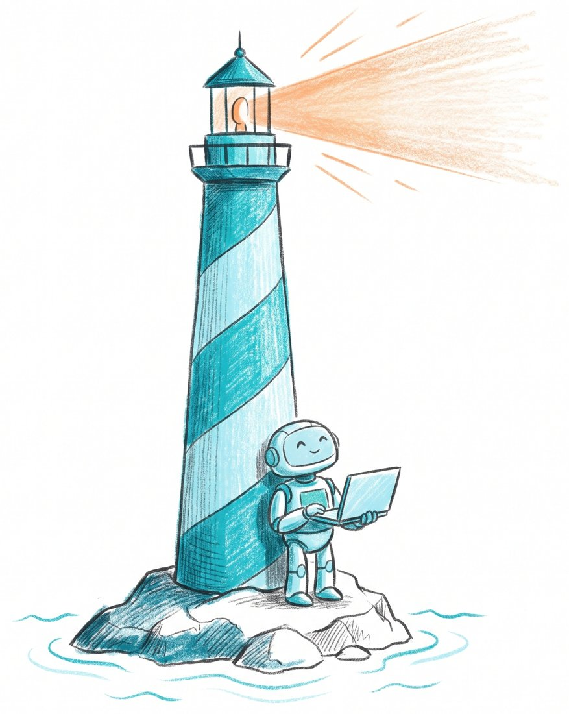
Welcome to the workshop.
If you have not started your setup yet, start it now. The next slide has the five checks. Tell me if anything gets stuck.
Today you learn to think like a CTO. You can build a working prototype in an afternoon, but shipping it is a different problem. We set up the foundations that engineers rely on first: source control, deployment, tests, checks and rules for the agent. With those in place, the AI becomes a more reliable partner, and you leave with a real app you can keep building.
The agent writes all the code. You decide what to build and check that it works. Ask questions the whole way through.
wsl --install. Do every step below inside it.node --version. It prints a version number.gh auth status. It says you are logged in.Follow along and copy the prompts
chrismdp.com/
Arrived late? Sit with someone who's set up and pair with them. You'll catch up faster than installing now.
Network: Password:
Setup guide: chrismdp.com/workshop/beyond-vibe-coding/v2/setup-guide.html
Something not working? Tell me now, before we start. If it cannot be fixed in time, you pair with someone at your table.
Leave this slide up by the door. Show the venue Wi-Fi details while people connect (set them in the event settings at the top of this file). These are the five checks from the setup guide. Walk the room and ask each table: did all five pass? Anyone stuck on a work laptop that blocks installs, or on an agent account with command-line access turned off, pairs now. Anyone who arrives late pairs too: sitting with someone who is set up beats installing mid-session. Pairing is part of the plan. When we start, move on to the show of hands.
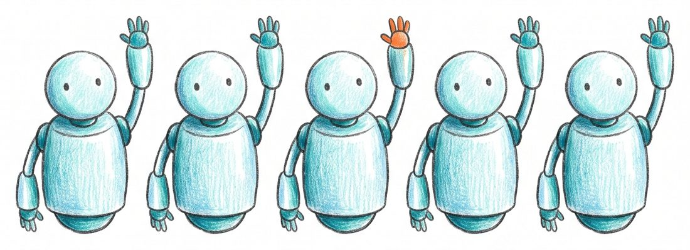
Keep your hand up for each question that fits. If you shipped software for paying customers, can you help your table today? If you already know commits and builds, we can spend longer on deployment. If the terminal is new to you, I will talk through the first prompt.
Three commands, then the agent does the rest.
mkdir lighthouse cd lighthouse claude
Using Codex? Type codex instead of claude. Windows: do this inside the Ubuntu window.
The terminal is the window where you run commands. Open Claude Code or Codex there. If your setup is unfinished, work with someone next to you.
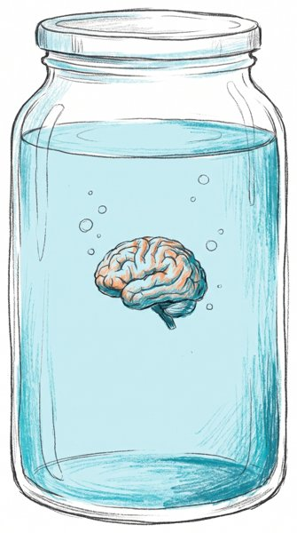
Claude chat or ChatGPTCan now build a small site that stores data, such as a Claude artifact. It lives inside the chat product, not on your machine or in your repo.
Halfway. Works on files on your computer, but with fewer tools and less control.
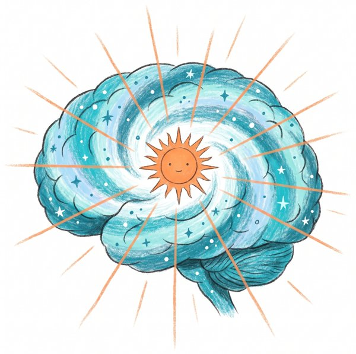
Claude Code or Codex in the terminalThe most tools and the most control. Edits files and installs software on your machine. Runs commands and reads the results.
Use Claude Code or Codex for every step today.
Use the terminal agent today: it has the most tools and gives you the most control. Chat tools can now build small sites that store data, such as Claude artifacts, and ChatGPT has its own equivalents. They are great for a quick tool, but the result lives inside the chat product, not on your machine or in a repo you own. Desktop agents like Cowork sit halfway: they work on local files, with a limited set of tools. Today the agent must run a command and read the result. When a test fails, it can read the error and change the code. Keep the terminal open so you can see that happen.
sudo runs as admin. Ask me, or the person next to you, before you say yes.Build a text adventure in a lighthouse. Put four rooms on a 2×2 grid. Move with the arrow keys. Each room describes the view and the exits. You can use your own idea if it follows these rules.
You can copy each prompt from this page. After the agent finishes, look for the check beside it. If the result differs, tell me. In our game, you can judge the movement by playing it.
Permissions. The agent will stop and ask before it edits a file or runs a command. Accepting file edits inside the project folder is fine. In Claude Code, auto mode checks each command before running it, which cuts the prompts a lot. The one to stop at is sudo: it runs the command as admin on your machine. If you see sudo, put your hand up or ask your neighbour before you say yes.
Each one is something a CTO sets up on day one. Today you set them up yourself, in this order.
On the way: secrets stay out of the code and out of the chat, a bad deploy is one revert away, and you learn when to bring in an engineer.
A break after step 3.
Do not explain them here. Each gets its own slide after you have done it. Say only: these are the nine steps, you will get through as many as you can, the rest stay on these slides, and none of them needs you to write code.
Step 1
Outside in
Prototype first. The screen, then the behaviour, then the code.
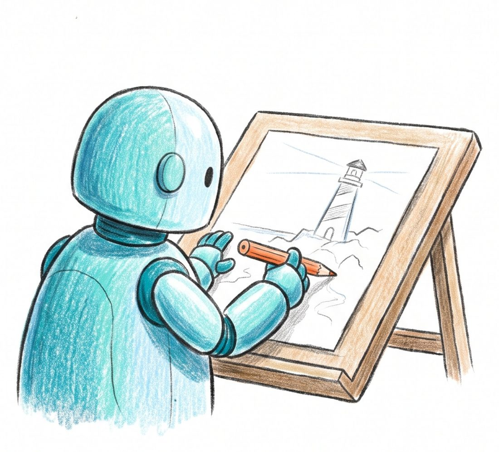
Create one index.html file for a tiny text adventure set in a lighthouse. Use four rooms on a 2×2 grid. Put the Spiral Stair at the top left and the Lamp Room at the top right. Put the Keeper's Kitchen at the bottom left and the Rocks at the bottom right. Start the player on the Rocks. Show the current room name. Describe what the player can see in two sentences. Show which directions the player can go. Use the arrow keys to move the player. If a direction is blocked, show a short message that says why. Use plain HTML and CSS. Write the game logic in TypeScript and compile it with tsc to a JavaScript file that the page loads. No frameworks. When the page is ready, run the build and open it in my browser.
Talk, do not type. Dictate your changes with Wispr Flow, Superwhisper or your computer's own dictation. You say more than you would type, and the agent gets more to work with.
Draw an illustration for each room as inline SVG, all in one hand-drawn style, and show it above the description. (Using Codex? Try first: Generate a real image for each room and show it above the description. If it says it cannot, use the SVG line.) Give each room a different colour and mood. Add a small map that marks my room. Make the rooms fade as I move between them. Each time, add: Do not make it a full app yet. Keep it a small prototype with no framework, as a reference for the proper app.
Claude Code cannot generate real images, so its illustrations are SVG drawings. Codex can sometimes make one. If a table gets a real image, show the room. Remind them to dictate their changes with Wispr Flow, Superwhisper or built-in dictation. Speaking gives the agent more detail than typing. Play it before you ask for another change. Does the room name match the map? Does the movement make sense? Give the agent a design change and look again. Leaving it as a design experiment counts as a success. Today we will keep going and put this game online.
Open the folder. Pick your computer:
open .
explorer.exe .
xdg-open .
In Claude Code, put ! in front to run it from the agent's tab. Or tell the agent: "Open this folder for me."
index.html: the page. What the browser shows.game.ts: the game logic, in TypeScript. This is the file you can read.dist/game.js: the same logic, compiled for the browser. Never edit this one.package.json and tsconfig.json: the project's name, its build command, its TypeScript settings.node_modules: other people's code the build needs. Do not open it. Do not commit it.Walk the folder on the projector. This is a project with several files. One file is the page, one is the logic you described in plain words, one is the compiled copy the browser runs, and two are settings. The agent can pick slightly different names. The files do the same jobs. After the next step a hidden .git folder appears: that is the history.
Step 2
Source control
Every change is a save point.
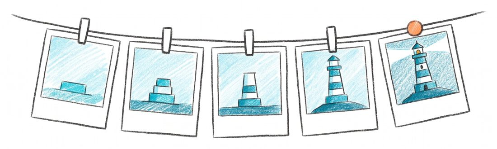
gh auth login: GitHub.com, HTTPS, Login with a web browser.gh auth status shows that you are signed in.brew install gh
sudo apt install gh
sudo apt install gh
Check whether the gh command is signed in to GitHub. If it is not, tell me what to type. Give me one step at a time. Wait for me after each step.
I am signed in to GitHub. Continue.
If you still need GitHub access, someone at your table can help. The GitHub CLI is the gh command. On Windows, install it inside Ubuntu, the same as Linux. If apt cannot find it, follow the Linux steps at cli.github.com. For gh auth login, choose GitHub.com, HTTPS and Login with a web browser. Copy the code into the browser and finish signing in yourself.
Set up git in this folder. Add a .gitignore for node_modules and dist first. Make the first commit. If git asks who I am, set my name and my GitHub noreply email for this project and try again. Create a public GitHub repo called lighthouse. Push to the repo. Show me the repo URL.
index.html.Make the room name bigger. Commit the change. Push it.
Git keeps the history of your files. A repo holds those files and their history. A commit is a save point. Push sends your commits to GitHub. Open the first commit and compare it with the second. Small commits help you find the change you want to undo.
The repo is public on purpose, so you can show it to anyone. Nothing secret goes in it. Step 9 shows where secrets live instead.
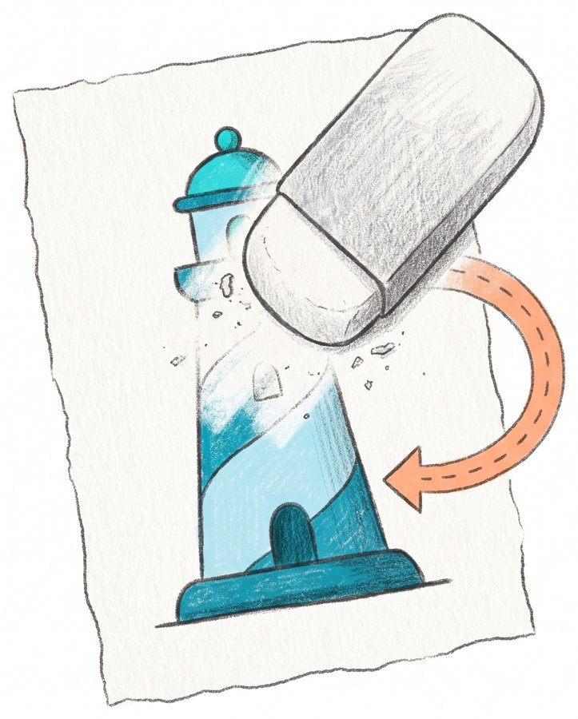
Tools such as Lovable can make commits for you. Open the history yourself and see what each commit changed. Ask the agent for small commits. If a design change makes things worse, you can find it and return to the earlier version.
You need to know what git can do, not how to type it. Ask in plain words, and ask the agent to confirm before it changes anything.
Show me the last 10 changes, in plain English.
What changed between the last two versions?
Undo the change from three changes ago. Tell me what you will do and wait for me to confirm.
Take the game back to how it looked an hour ago. Confirm before you do it.
Try this idea on a separate branch, so I can throw it away if I do not like it.
Try one now: ask for the last 10 changes. Then try the undo, and watch it ask you first. Git has a lot of commands, and you do not need any of them. The agent knows them all. Your job is to know that every version is saved, that any change can be undone, and to ask for a confirmation before anything is thrown away.
Step 3
Automatic deployment
Push to main and it is live. Set it up before it matters.
Get this project ready to deploy on Vercel. I will connect Vercel to this GitHub repo, and Vercel will run npm run build on every push to main. Make sure npm run build compiles the TypeScript, and that Vercel serves the page and the compiled game from the right folder. Add a vercel.json only if Vercel needs one. Run the build here to check it works. Commit the change. Push it.
This is the only setup step in the browser, and you do it once. Vercel's GitHub app watches your repo. After that, every push to main builds and deploys to production. There is no token to copy and no secret to store. The agent prepares the build first, so the first deploy works.
Hobby is free and needs no card, but it is for personal, non-commercial projects. At work, use your company's team plan. If GitHub asks which repos Vercel can see, choosing only lighthouse is fine. If the first build fails, open the build log on Vercel, copy the error into the agent and ask it to fix and push.
.vercel.app address under Domains. It opens on your phone.Set the page title to "Lighthouse, by [your name]". Commit the change. Push it.
Share the short address under Domains on the project page. That is your live URL, and it always points at the latest good deployment. Each deployment also gets its own long address, and those can ask for a Vercel login. That is deployment protection, and it is expected. Use the short one.
Open the live URL on your phone. Your phone loads the app from Vercel. After the title change, reload that same address. On GitHub, click the tick beside the commit: it links to the Vercel deployment. If you finish early, ask the agent to explain what Vercel runs on each push, or add a custom domain.
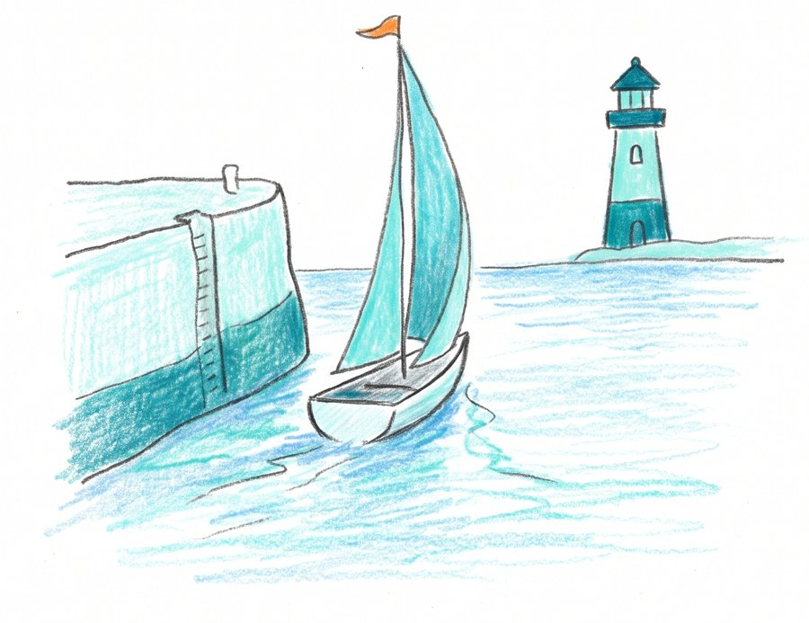
Vercel builds the app and sends it live after each push to main. We set it up while the app is small, when it is easy. After the break, we will add checks to stop a broken change going live.
If the live site shows an error, copy the error, paste it into the agent and ask it to fix it. Then push. The same setup takes the fix live.
.vercel.app URL opens on your phone.If a check is missing, tell me. If all three pass, help the next table.
Open the repo and the live URL beside each other. If you are stuck connecting Vercel to GitHub, tell me and I will come over. Before we start again, everyone must have these three checks or work with someone who does.
Take a break
Come back for a real app, tests and types.
Step 4
A real app, same rails
Next.js and TypeScript inside the pipeline you already have.
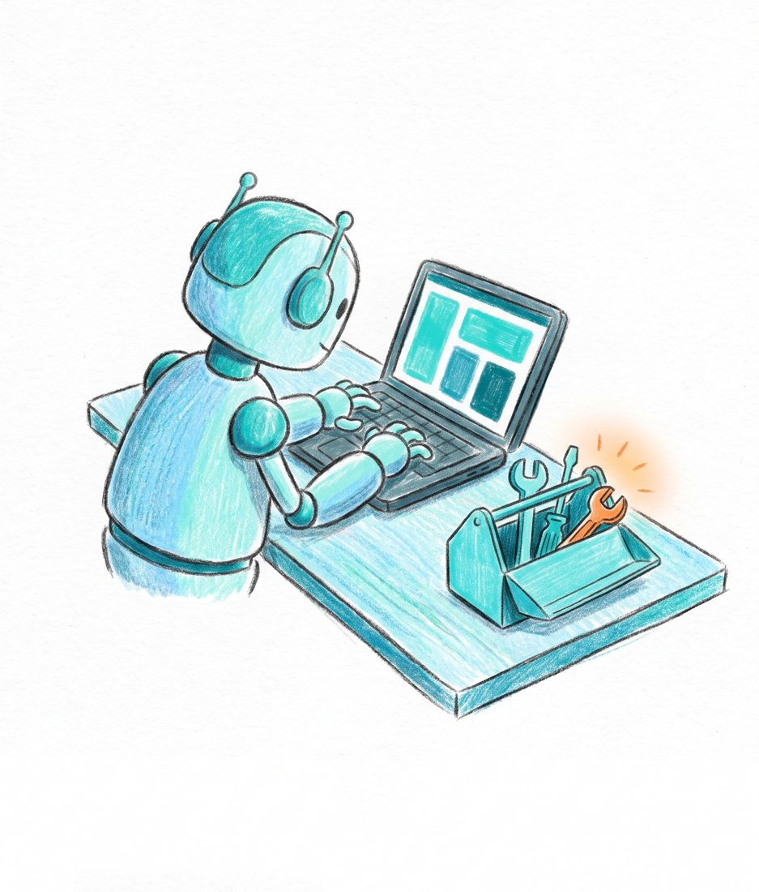
Create a new Next.js app in TypeScript with create-next-app. It needs an empty folder, so create it in a new folder first, then move it into this project. Keep the git history. Rebuild the game inside it, using the prototype as the reference. Keep the design unchanged. Vercel runs Next.js natively, but it imported this project as a plain site. So set "framework": "nextjs" in vercel.json, and remove the old build and output settings from it. Run the app locally and open it in my browser. Wait for me to check it. When I say it looks right, commit the changes, push them and give me the live URL.
Use Next.js: it is the framework the agent knows best. The design, the URL and the deployment have not changed, and underneath there is now a Next.js app in TypeScript. That is the scaffold the page promised, done in one prompt because the rails were already there.
Why bother with a real app?
From now on you see every change on your own laptop before it goes live. The local copy is your preview. Nothing reaches the live URL until you say go. Vercel also gives every branch you push its own preview URL, so later you can share a change with someone before it goes live.
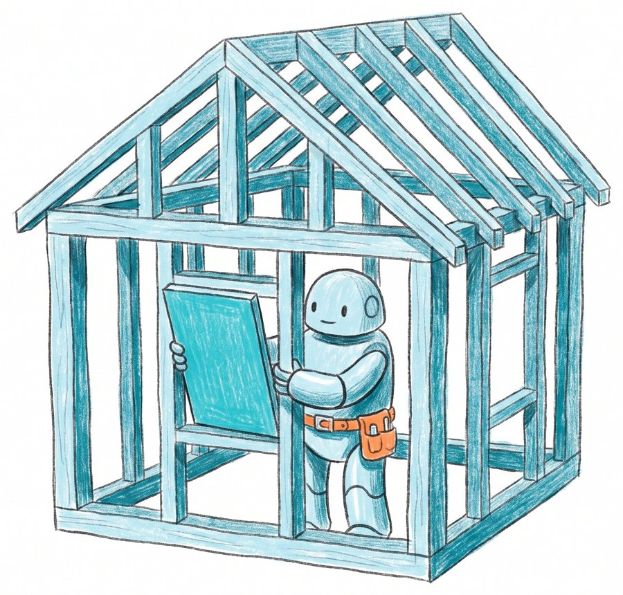
Use Next.js: it is the framework the agent knows best, and that matters more than which framework is best. Strictly optional, but useful. Next.js handles a whole bunch of static caching for you. It builds a standard React structure into your app. Not necessarily the best framework, but the one the AI knows best, and that is what matters when the agent is doing the work. When you make something much more complex, or want to do a lot of design work, it gives the agent a real structure to hang that work off. I prefer this to vibe-coding plain JavaScript apps with no shape to them.
Step 5
Tests and builds
Say what true looks like first. A broken change never ships.
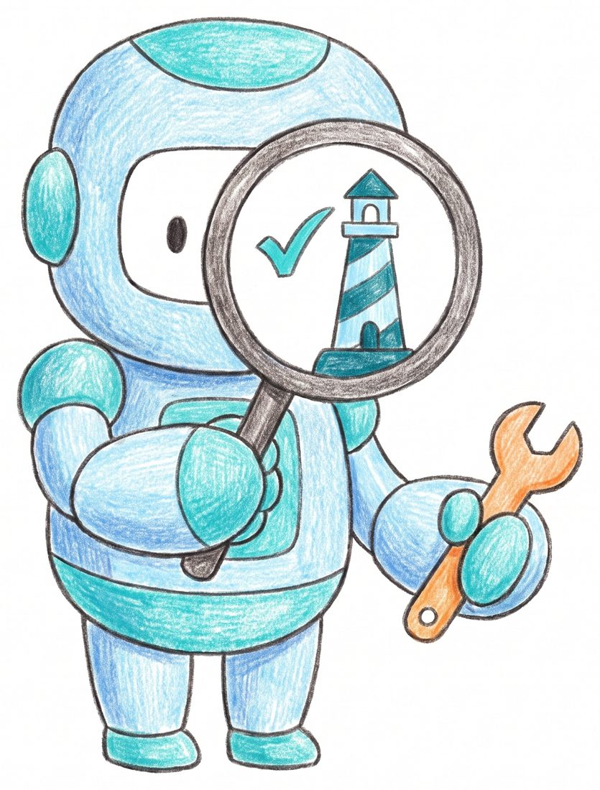
Add this rule: the Lamp Room door stays locked until the player visits the Keeper's Kitchen. Put the room-movement rules in a plain function that does not need a browser. First, write a failing test for this behaviour. At the start, pressing up from the Rocks must leave the player on the Rocks. The message must be "The lamp room door is locked." After visiting the Keeper's Kitchen, pressing up from the Rocks must take the player into the Lamp Room. Run the test. Show me that it fails. Then change the code to make it pass.
Make the build run the tests first. Change the build script in package.json so it runs the tests, then builds the app. If a test fails, the build must fail, so Vercel keeps the last good version live. Run the build here to check it. Commit the change. Push it.
The game lets you enter the Lamp Room today. Our new rule must fail its first test because we have not added the lock. Read the failure before the agent fixes it. The game must remember a visit to the Keeper's Kitchen. Then the build runs the tests before every deploy. Vercel runs the build on every push, so a failing test fails the build and nothing goes live. Lint and the type check join the build in step 6.
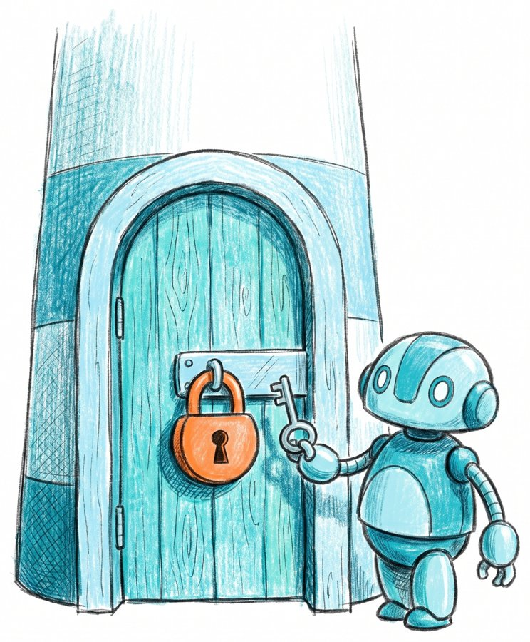
You chose a rule you can check by playing the game. The test checks that rule after later changes too. A green tick proves the rules were followed, and says nothing about the design. You still choose what the game does and whether it is worth keeping. If you need help before shipping, ask an engineer.
Why this is useful: tests matter most for complex checks, where the only other way to know is to read the code. Developers still write them for important step-by-step things like sign-in, and for complex code they could not follow otherwise. They do not bother for trivial or low-risk systems. So match the checks to the risk.
This error is planned. It is the input to the next step.
Change the code so the Lamp Room door never locks. Leave the test unchanged. Commit the change. Push it.
The Vercel build failed. Run the build here to see the same failure. Restore the lock. Do not change the test. Push the fix.
This error is planned. It is the input to the next step. Open the failed deployment on Vercel and read the build log: the test named the broken rule. Then play the live game. The door must still lock there, because a failed build never replaces the live version. Some machines pass first time and some show a different error. That is normal variation. Read the failure you have before you ask the agent to fix it. You can also paste the Vercel build log straight into the agent.
Some agents refuse to remove the lock, because the instruction contradicts the test. That is a good sign, and it is fine. Tell it: "This is a deliberate demo. Do it anyway."
Step 6
Types and linting
Checks on every line that you did not have to write.
Change the move function to take a number for the direction instead of a word. Leave the code that calls it unchanged. Run the type check. Show me the result.
Add an unused variable near the top of the game component. Run the linter. Show me what it reports. Then remove the variable, run the linter again and show me it is clean.
Add lint and the type check to the build script, before the tests. If lint, the type check or the tests fail, the build must fail, so nothing goes live. Run the build here to check it. Commit the change. Push it.
Just use TypeScript: it is easier for the agent to get right. A type says what kind of value the code expects. Our move function expects a direction word. We changed it to expect a number, but the caller still sends a word. Read the line named by the type check. Then tell the agent: "Restore the move function to take a word for the direction." Lint is the same idea for style and common mistakes: it reads every line, and the agent fixes what it names. Last, both go into the build, next to the tests from step 5. Now one failing check stops the deploy.
Just use TypeScript: it is easier for the agent to get right. The type check found a mismatch before you played the game. The agent can use that error to find the line and fix it. TypeScript adds checks throughout the code, like tests you did not write. Types cannot tell you whether the door locks at the right time. Your test from step 5 already covers that rule.
Step 7
Rules for the agent
AGENTS.md carries the standards between sessions.
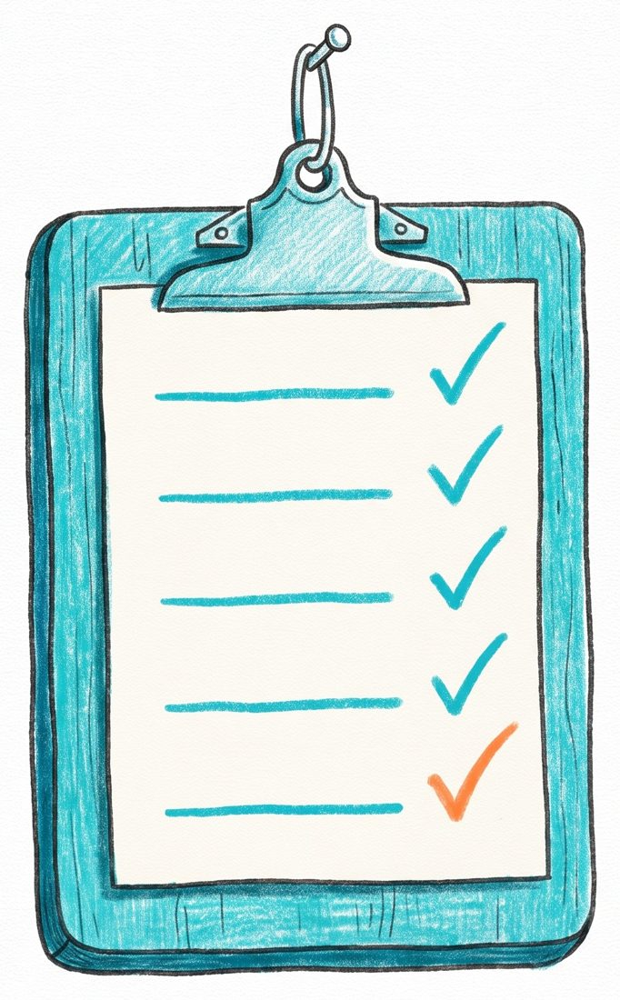
If this project already has an AGENTS.md, keep what is there and add these rules to it. If not, create one with these rules. Before changing behaviour, write a failing test. Before saying a change is done, run tests, lint and the type check. If a check fails, do not push. Commit after each small change. Ask before adding a library. Before you push, run the app locally and wait for me to check it. Then make sure there is a CLAUDE.md that points at AGENTS.md with the line @AGENTS.md, so Claude Code reads the same rules.
Close the agent and start a new session. Ask: "Which project rules must you follow?" Listen for all six rules. Many agents, including Codex and Cursor, read AGENTS.md. Claude Code reads CLAUDE.md, so a CLAUDE.md that points at AGENTS.md gives every agent the same rules from one file. The file gives the next session the same instructions. Add rules for choices that the automated checks cannot make.
Step 8
More features
Plan, design, test, check, push.
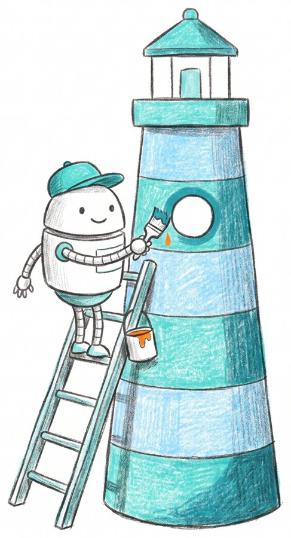
I want to build: ______. Ask me one question at a time until you have enough information to build it. Then tell me your plan. Do not change any code until I say go.
Add a fifth room with its own rule. Pick up a key in the Keeper's Kitchen. Show it in an inventory. Remember my room when I reload the page. Redraw the room illustrations in a style you choose. Art-direct the agent.
Spec first. The agent asks one question at a time, so you answer each in a sentence and nothing gets missed. When it has enough, it tells you the plan. Correct it in plain words, then say go. The answers are the spec, and the design and the test do the rest. Start with the screen: "Add a screen for X. Hard-code the data. Open it in my browser." The hard-coded version will look wrong in places, because the data is fake. That is expected until the behaviour lands. Change the design until it looks right. Then ask: "Write a failing test for X. Change the code to make it pass." Finish with: "Commit the change. Push it." If you finish early, go on to step 9.
Step 9
A database
Data that lives outside the browser. For tables that finish early.
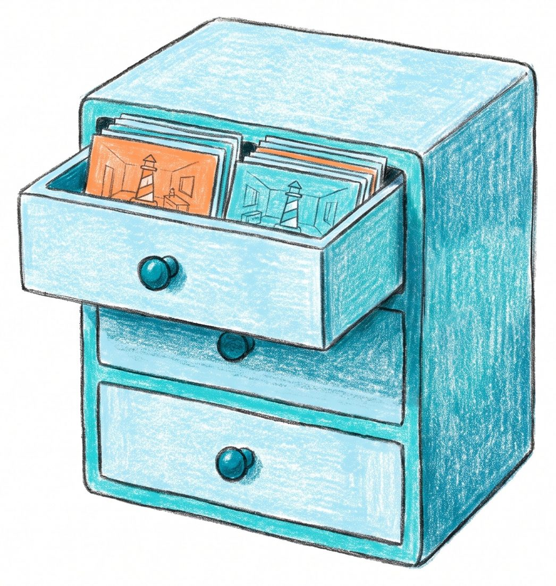
Optional. If your feature is done and pushed, carry on here. The game's rooms move out of the code and into a Neon Postgres database, added from Vercel.
Move the rooms into the Neon Postgres database I added in Vercel. Link this folder to my lighthouse project with the Vercel CLI, then run vercel env pull so DATABASE_URL is in .env.local. Check that .env.local is in .gitignore. Never print the connection string or put it in the code. Write a migration to create a rooms table and add the four rooms. Store each room's name, description and grid position, and work out the exits from which rooms sit next to each other, so one new row adds a room and its doors. Read the rooms from the database on every request, not once at build time. Keep the movement rules pure so the existing tests still pass. Make the build run the migrations after the checks pass and before it builds the app. Run the migration now. Commit the changes. Push them. Give me the live URL.
npx vercel login. Sign in with GitHub. If no browser opens, copy the link it prints.DATABASE_URL..env.local is not in your GitHub repo.Neon is a Postgres database. Adding it from Vercel's Storage tab needs no card on the free plan. Vercel puts the connection string into the project's environment variables as DATABASE_URL, and vercel env pull copies it to .env.local on your laptop. That file is gitignored, so it never reaches GitHub.
Secrets never go in the code, public repo or private. That is one of the rules of a twelve-factor app, at 12factor.net/config: settings and secrets live in the environment, outside the code. The connection string is a password to your data. It lives in Vercel's settings and in one ignored file on your laptop, never in the repo and never pasted into a chat. That is why a public repo costs you nothing.
Neon stores the room data outside the browser for the first time. Keep movement rules pure: they take values and return results without reading the database. The page must read the rooms on each request; if it reads them at build time, the Cellar will not appear until the next deploy. If it fails, ask the agent to remember your room after a reload instead.
Add a fifth room called the Cellar below the Keeper's Kitchen. Use one SQL insert against the database in .env.local. Do not change any code. Do not deploy.
No code changed and nothing was deployed, but the game has a new room. The rooms are data now, so the world can grow without a release. Your laptop and the live site use the same database here, which is why one insert shows up live.
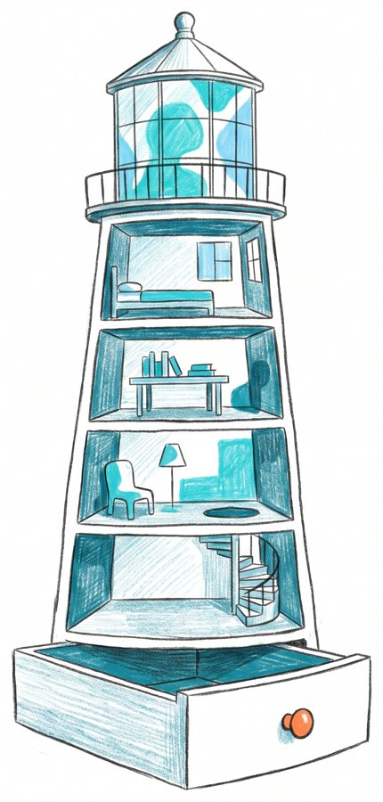
If you tried the database, show us the Cellar at your live URL. A database stores data that the app reads. Neon holds the rooms in a table outside the browser. One SQL insert adds the Cellar to that table. The app reads the extra room without a new deployment. Your position and visited rooms still stay in the browser.
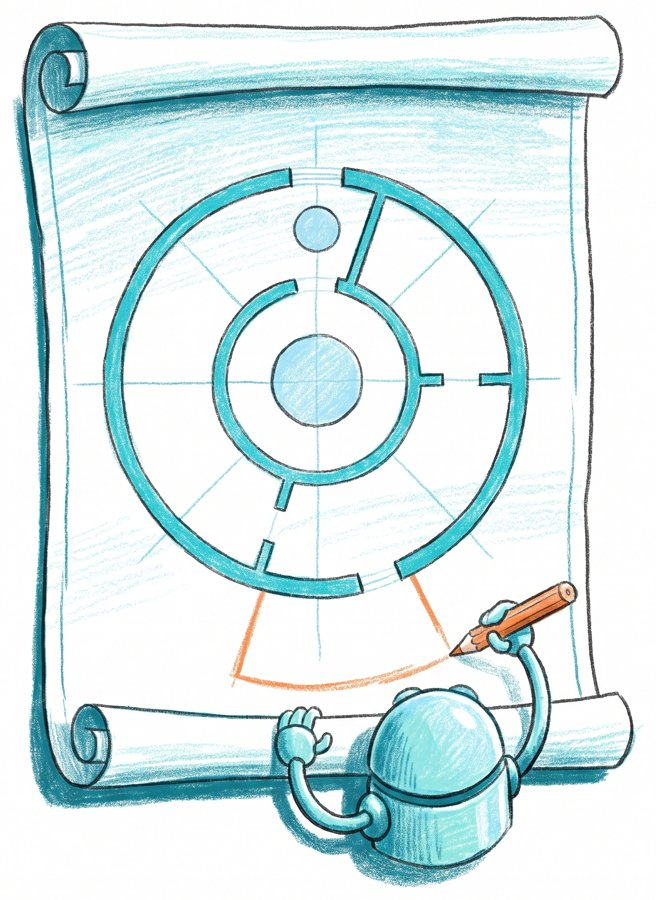
You wrote a migration in the database prompt: it created the rooms table. Every change to the shape of the database goes the same way. Each one is a new numbered file, committed to git and run by the build before it deploys. Nobody changes the live database's shape by hand, because then your laptop and the live site no longer match. Adding the Cellar was different: that was content, not shape, so one insert was fine.
pg_dump saves a Postgres database to a file. Ask the agent to run it.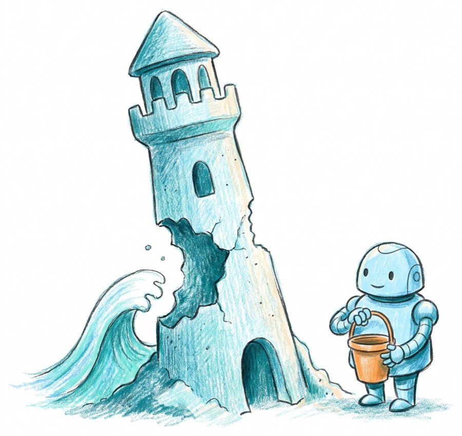
Everything today could be undone with git. Data is the exception. Before a migration that removes anything, make a backup: ask the agent to export the database first. Neon also keeps a short history you can restore from, but a restore takes the whole database back, including anything people added since. The bigger line is people. The lighthouse stores rooms. The moment your app stores names, emails or anything about a person, the stakes change, and that is a conversation with an engineer before you ship.
Story: bad data outlasts the outage. On 8 September 2026, a software defect at NATS produced corrupted flight data in a millisecond. The system was back that evening, but more than 2,000 flights were cancelled, and it took airlines over two more days to get planes and crews back in place. The 2023 NATS failure was the same shape: about four hours down, around 1,600 cancellations, 700,000 people affected, and disruption until the weekend. The fix was quick. Clearing up after bad data was not. Bigger version: the TSB banking migration in 2018, where moving customer data to a new system caused problems that ran for months.
What the page said you would leave with:
This page stays up at chrismdp.com/workshop/beyond-vibe-coding/v2. Your app is in your GitHub and on your Vercel. chrismdp.com/coding-with-ai has the longer version.
This list is the workflow. On Monday it is the same for a real product as it was today for a lighthouse. The order matters more than the tools. Next: when to talk to an engineer.
You can build and ship this far on your own. Bring in an engineer before any of these:
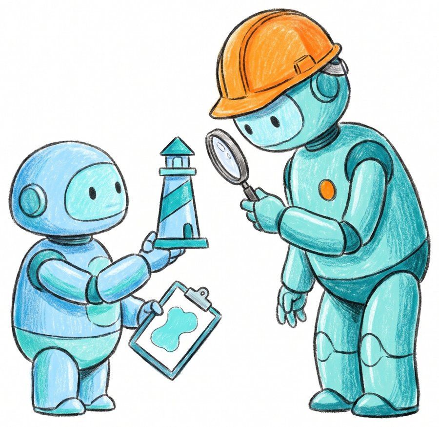
The live URL. The GitHub repo. The tests for the behaviour you want.
Before I ship this, I must speak to ______.
Everything today was safe to try alone: one game, no users, no personal data, and every change could be undone. Real products cross lines where a mistake costs more than a morning. Those are the moments to bring in an engineer. Sign-in is the big one. The moment the app has a login, you hold other people's accounts and you decide who can see what.
You do not arrive empty-handed. A live URL, a repo and tests for the behaviour you want give an engineer something concrete to work with. Write the name of one person you will speak to before you ship.
Each one is something a CTO sets up on day one. You set up as many as you reached; the rest are on these slides.
You just did what a CTO does on day one of a product. The agent typed and you judged.
These are the same nine cards as the start. Then they were a promise. Now the ones you reached are things you did, and the rest are on these slides to finish at home. None of them needed you to write code. Then we have time for questions. There is more at chrismdp.com/coding-with-ai.
Thank you
Any questions?
Chris Parsons
chrismdp.com
linkedin.com/in/chrisparsons
This page stays up: chrismdp.com/workshop/beyond-vibe-coding/v2
Thank you. Any questions? Scan the QR code to connect with me on LinkedIn, and there is more on my website. This page stays up, so you can come back to the prompts.
Shortcuts. They work in either window, and both windows move together.
→ ← change slide · N notes window · ? help · F fullscreen · D switch view · Home go to start